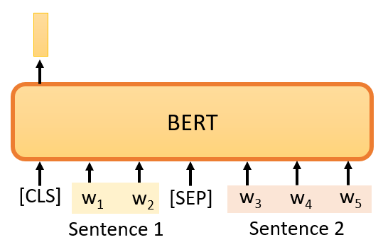

机器学习 by 李宏毅(9-1)
P1 Self-Supervised Learning
芝麻街
ELMo, Embeddings from Language Models
BERT, Bidirectional Encoder Representation from Transformers
ERNIE, Enhanced Representation through Knowledge Integration
Big Bird, Tansformer for Longer Sequences
Large Models
BERT, Extremely big model with 340M parameters
ELMO, 96 M
GPT-2, 1542 Million
Megatron, 8 Billion
T5, 11 Billion
Turing NLG, 17 Billion
GPT-3, 10 times larger than Turing NLG, 175 Billion
Switch Transformer, 1.6 Trillion parameters
What is Self-Supervised?
在不存在 Label 情况下，进行 Supervised Learning。假设已有文章x，将文章分为x' x'' 两部分，将x'' 作为 label，x' 作为 model 的 Input。
BERT
BERT 是 Transformer Encoder ，Input vector output vector 相同的长度，常用于NLP field。
Masking get label
Input a sequence, then randomly masking some tokens，有两种方法来做mask，一种是添加一个特殊的标记 "MASK"，另一种是用一个字来替换某个字。
- replacing the word with a special token
- replacing the word with a random word
mask后，我们把BERT的输出看作是另一个序列，我们在输出序列中寻找mask部分的相对应的输出，然后这个向量将通过一个Linear transform，即向量与一个矩阵相乘，然后做softmax，输出一个分布。输出是一个很长的向量，包含我们想要处理的每个汉字，每一个字都对应到一个分数。
在训练过程中，我们知道被mask的字符是什么，而BERT不知道，我们可以用一个one-hot vector来表示这个字符，并使输出和one-hot vector之间的 cross entropy 最小。实质上是分类问题，mask的字符是我们的label，BERT需要预测mask的字符。
Next Sentence Prediction
当我们训练BERT时，除了mask之外，我们还会使用另一种方法，这种额外的方法叫做Next Sentence Prediction.从数据库中拿出两个句子，然后在这两个句子之间添加一个特殊标记 [SEP]。这样，BERT就可以知道，这两个句子是不同的句子，因为这两个句子之间有一个分隔符。

在句子的开头添加一个特殊标记，用CLS来表示. 经过 BERT 得到一个 sequence，但只考虑CLS对应的输出，乘以一个Linear transform，再做一个二分类问题输出：是或不是，即预测，第二句是否是第一句的后续句。这个方法被称为Next Sentence Prediction 。但后来的研究发现，对于BERT要做的任务来说，Next Sentence Prediction 并没有真正的帮助。

还有一种类似于Next Sentence Prediction 的方法，它在文献上看起来更有用，被称为Sentence order prediction，简称SOP。主要思想是，我们最初挑选的两个句子可能是相连的，有两种可能性：要么句子1在句子2后面相连，要么句子2在句子1后面相连。让 BERT 预测两个句子的 order
BERT TASK
训练目标：
- Mask 一些汉字，然后要求 BERT 填补缺失的字符
- 预测两个句子是否有顺序关系
BERT的神奇之处在于，在你训练了一个填空的模型之后，它还可以用于其他任务。被称为Downstream Tasks(下游任务)，但是，当我们想让BERT学习做这些任务时，我们仍然需要一些标记的信息
BERT只是学习填空，但是，以后可以用来做各种你感兴趣的 Downstream Tasks 。它就像胚胎中的干细胞,它有各种无限的潜力。我们只需要给它一点数据来激发它。BERT分化成各种任务的功能细胞，被称为Fine-tune(微调)
为了测试Self-supervised学习的能力，通常会在多个任务上测试它，让 BERT 分化成各种任务的功能细胞，测试在每个任务上的准确性，然后我们取其平均值，得到一个总分。任务集中最著名的基准被称为GLUE，它是General Language Understanding Evaluation的缩写。

BERT在GLUE上的性能，

在这张图中，横轴表示不同的模型，除了ELMO和GPT，其他的还有各种BERT。 黑色的线，表示人类在这个任务上的准确度。这里每一个点代表一个任务，蓝色曲线表示机器GLUE得分的平均值。
Application
Case 1： Sentiment analysis
Sentiment analysis情感分析，输入 model 一个句子，让它判断这个句子是正面的还是负面的。
对于BERT来说，只要给它一个判断情绪的句子，然后把CLS标记放在这个句子的前面，输入到BERT中, 这4个输入实际上对应着4个输出。但只看CLS的部分。CLS在这里输出一个向量，再进行Linear transform，也就是将它乘以一个Linear transform的矩阵，这里省略了Softmax。
然而，在实践中，你必须为你的Downstream Tasks 提供标记数据，换句话说，BERT没有办法从头开始解决情感分析问题，你仍然需要向BERT提供一些标记数据，你需要向它提供大量的句子，以及它们的正负标签，来训练这个BERT模型。

在训练的时候，Linear transform和BERT模型都是利用Gradient descent来更新参数的。
- Linear transform的参数是随机初始化的
- 而BERT的参数是由预训练的 Mask+NSP BERT初始化的。
学过填空的BERT，比随机初始化新参数的网络表现更好

首先，在训练网络时，scratch与用学习填空的BERT初始化的网络相比，损失下降得比较慢，最后，用随机初始化参数的网络的损失仍然高于用学习填空的BERT初始化的参数。
- 当你进行Self-supervised学习时，你使用了大量的无标记数据。
- 另外，Downstream Tasks 需要少量的标记数据。
所谓的 "半监督 "是指，你有大量的无标签数据和少量的有标签数据，这种情况被称为 "半监督"，所以使用BERT的整个过程是连续应用Pre-Train和Fine-Tune，它可以被视为一种半监督方法。
Case 2 ：POS tagging
词性标注，给model一个句子，它必须告诉你这个句子中每个词的词性，即使这个词是相同的，也可能有不同的词性。
你只需向BERT输入一个句子。之后，对于这个句子中的每一个标记，它是一个中文单词，有一个代表这个单词的相应向量。然后，这些向量会依次通过Linear transform和Softmax层。最后，网络会预测给定单词所属的类别，例如，它的词性。
但是，你可以把这些例子改成其他任务，例如，你可以把它们改成语音任务，或者改成计算机视觉任务。语音、文本和图像都可以表示为一排向量。虽然下面的例子是文字，但这项技术不仅限于处理文字，它还可以用于其他任务，如计算机视觉。
Case 3：Natural Language Inference
模型输入两个句子，输出一个类别。机器要做的是判断，是否有可能从前提中推断出假设。这个前提与这个假设相矛盾吗？
例如，前提：一个人骑着马，然后他跳过一架破飞机。假设：这个人在一个餐馆。所以推论说这两个是矛盾的。这种任务很常见，例如，舆情分析。给定一篇文章，下面有一个评论，这个消息是同意这篇文章，还是反对这篇文章？
只需要 BERT 输入两个句子，我们在这两个句子之间放一个特殊的标记，并在最开始放CLS标记。但我们只把CLS标记作为Linear transform的输入，它决定这两个输入句子的类别。
Case 4：Extraction-based Question Answering (QA)
回答系统，在机器读完一篇文章后，你问它一个问题，它将给你一个答案。但 Extraction-based的QA，假设答案必须出现在文章中。
在这个任务中，一个输入序列包含一篇文章和一个问题，文章和问题都是一个序列。对于中文来说，每个d代表一个汉字，每个q代表一个汉字。你把d和q放入QA模型中，我们希望它输出两个正整数s和e。根据这两个正整数，我们可以直接从文章中截取第 s个字到第e个字，就是答案。
使用BERT预训练的模型，输入一个问题，一篇文章，以及在问题和文章之间的一个特殊标记，然后我们在开头放一个CLS标记。
在这个任务中，需要从头训练（随机初始化）两个向量，用橙色向量和蓝色向量来表示，这两个向量的长度与BERT的输出相同。如何使用这两个向量？
计算橙色向量和与文件相对应的输出向量的内积, 图中有3个代表文章的标记, 即输出三个向量, 计算这三个向量与橙色向量的内积, 得到三个值, 然后通过 softmax 函数。
这个内积和attention很相似，你可以把橙色部分看成是query，黄色部分看成是key，这是一个attention。然后找到分数最大的位置，图中为2，输出的起始位置应该是 s = 2
蓝色部分完全一样，计算得到 Scalar 取 argmax 得到 e=3
最终的 answer = d2 d3
Q&A
Q：BERT的输入长度有限制吗？
A：理论上没有，因为BERT模型是一个transformer的Encoder，所以可以输入很长的序列，只要你必须能够做Self-Attention，但Self-Attention的计算复杂性是非常高的。所以在实践中，BERT最多可以输入512长度的序列，Self-Attention在中间就要产生512乘以512大小的Attention Metric，那么你可能会被计算所淹没。所以实际上它的长度不是无限的。
Training BERT is challenging!
BERT是这样一个著名的模型，在预训练中，它只是填空题。但是，真的不能把它训练起来。谷歌最早的BERT,它使用的数据规模已经很大了,它的数据中包含了30亿个词汇，所以你处理起来会比较痛苦,更痛苦的是训练过程
BERT Embryology (胚胎学)
BERT的训练过程中需要非常大的计算资源，所以我们想知道有没有可能，节省这些计算资源？有没有可能让它训练得更快？,
BERT在学习填空的过程中，学到了什么？"它在这个过程中何时学会填动词？什么时候学会填名词？ 什么时候学会填代词？ 没有人研究过这个问题。所以我们自己训练BERT后，可以观察到BERT什么时候学会填什么词汇，它是如何提高填空能力的？
Pre-training a seq2seq model
上述的任务都不包括，Seq2Seq模型，如果我们要解决，Seq2Seq模型呢？BERT只是一个预训练Encoder，有没有办法预训练Seq2Seq模型的Decoder？
假设有一个Seq2Seq模型，有一个transformer，还有一个Encoder和Decoder。输入是一串句子，输出是一串句子，中间用Cross Attention连接起来，然后你故意在Encoder的输入上做一些干扰，Encoder看到的是被破坏的结果，那么Decoder输出句子被破坏前的结果，训练这个模型实际上是预训练一个Seq2Seq模型。
如何对输入做干扰？比如，删除一些词，打乱词的顺序，旋转词的顺序。或者插入一个MASK，再去掉一些词。总之，有各种方法。在破坏了输入的句子之后，它可以通过Seq2Seq模型来恢复它。
P2 Fun Facts about BERT
Why does BERT work?
最常见的解释是，当输入一串文本时，每个文本都有一个对应的向量。对于这个向量，我们称之为embedding。
这些向量代表了输入词的含义。例如，模型输入 "台湾大学"（国立台湾大学），输出4个向量。这4个向量分别代表 "台"、"湾"、"大 "和 "学".更具体地说，如果你把这些词所对应的向量画出来，或者计算它们之间的距离。意思比较相似的词，它们的向量比较接近。例如，水果和草都是植物，它们的向量比较接近。
BERT可以考虑上下文，所以，同一个词，比如说 "苹果"，它的上下文和另一个 "苹果 "不同，它们的向量也不会相同。
假设现在考虑 "苹果 "这个词，我们会收集很多有 "苹果 "这个词的句子，比如 "喝苹果汁"、"苹果Macbook "等等。然后，我们把这些句子放入BERT中，计算 embedding。

在Encoder中存在Self-Attention，所以根据 "苹果 "一词的不同语境，得到的向量会有所不同。接下来，我们计算这些结果之间的cosine similarity，即计算它们的相似度。
前5个句子中的 "苹果 "代表可食用的苹果。例如，第一句是 "我今天买了苹果吃"，第二句是 "进口富士苹果平均每公斤多少钱"，第三句是 "苹果茶很难喝"，第四句是 "智利苹果的季节来了"，第五句是 "关于进口苹果的事情"
后面五个句子也有 "苹果 "一词，但提到的是苹果公司的苹果。例如，"苹果即将在下个月发布新款iPhone"，"苹果获得新专利"，"我今天买了一部苹果手机"，"苹果股价下跌"，"苹果押注指纹识别技术"
计算每一对之间的相似度，得到一个10×10的矩阵。相似度越高，这个颜色就越浅。所以，自己和自己之间的相似度一定是最大的，自己和别人之间的相似度一定是更小的。但前五个 "苹果 "和后五个 "苹果 "之间的相似度相对较低。BERT知道，前五个 "苹果 "是指可食用的苹果，所以它们比较接近。最后五个 "苹果 "指的是苹果公司，所以它们比较接近。所以BERT知道，上下两堆 "果 "的含义不同。
BERT的这些向量是输出向量，每个向量代表该词的含义。BERT在填空的过程中已经学会了每个汉字的意思。"为什么BERT有如此神奇的能力？ 这里，约翰-鲁伯特-弗斯，一位60年代的语言学家，提出了一个假说。他说，要知道一个词的意思，我们需要看它的 "Company"，也就是经常和它一起出现的词汇，也就是它的上下文。
一个词的意思，取决于它的上下文
所以以苹果（apple）中的果字为例。如果它经常与 "吃"、"树 "等一起出现，那么它可能指的是可食用的苹果。
如果它经常与电子、专利、股票价格等一起出现，那么它可能指的是苹果公司。
当我们训练BERT时，我们给它w1、w2、w3和w4，我们覆盖w2，并告诉它预测w2，而它就是从上下文中提取信息来预测w2。所以这个向量是其上下文信息的精华，可以用来预测w2是什么。
这样的想法在BERT之前已经存在了。在word embedding中，有一种技术叫做CBOW。
CBOW所做的，与BERT完全一样。做一个空白，并要求它预测空白处的内容。CBOW word embedding技术，可以给每个词汇一个向量，代表这个词汇的意义。CBOW是一个非常简单的模型，它使用两个 transform，是一个非常简单的模型。当你使用BERT的时候，就相当于一个深度版本的CBOW，你可以做更复杂的事情，而且BERT还可以根据不同的语境，从同一个词汇产生不同的embedding。因为它是一个考虑到语境的高级版本的词embedding，BERT也被称为Contextualized embedding，这些由BERT提取的向量或embedding被称为Contextualized embedding
Multi-lingual BERT
它是由很多语言来训练的，比如中文、英文、德文、法文等等，用填空题来训练BERT，这就是Multi-lingual BERT的训练方式。
Zero-shot Reading Comprehension
google训练了一个Multi-lingual BERT，它能够做这104种语言的填空题。但如果你用英文的问答数据训练它，它就会自动学习如何做中文问答
真实的实验例子，这是一些训练数据。他们用SQuAD进行fine-tune，这是一个英文Q&A数据集。中文数据集是由台达电发布的，叫DRCD。
如果我们允许用中文填空题进行预训练，然后用中文Q&A数据进行微调，那么它在中文Q&A测试集上的正确率达到89%。因此，其表现是相当令人印象深刻的。
神奇的是，如果我们把一个Multi-lingual的BERT，用英文Q&A数据进行微调，它仍然可以回答中文Q&A问题，并且有78%的正确率，这几乎与QANet的准确性相同。它从未接受过中文和英文之间的翻译训练，也从未阅读过中文Q&A的数据收集。它在没有任何准备的情况下参加了这个中文Q&A测试，尽管它从未见过中文测试，但不知为何，它能回答这些问题。
一个简单的解释是：也许对于多语言的BERT来说，不同的语言并没有那么大的差异。无论你用中文还是英文显示，对于具有相同含义的单词，它们的embedding都很接近。
实际上做了一些验证。验证的标准被称为Mean Reciprocal Rank，缩写为MRR。MRR的值越高，不同embedding之间的Alignment就越好。更好的Alignment意味着，具有相同含义但来自不同语言的词将被转化为更接近的向量。如果MRR高，那么具有相同含义但来自不同语言的词的向量就更接近。
深蓝色的线是谷歌发布的104种语言的Multi-lingual BERT的MRR，它的值非常高，这说明不同语言之间没有太大的差别。橙色这条是我们试图自己训练Multi-lingual BERT。我们使用的数据较少，每种语言只使用了20万个句子。对于我们的Multi-lingual BERT来说，无论你如何调整参数，它就是不能达到Multi-lingual的效果，它就是不能达到Alignment的效果。我们把数据量增加了五倍，所以看起来，数据量是一个非常关键的因素，关系到能否成功地将不同的语言排列在一起。所以有时候，神奇的是，很多问题或很多现象，只有在有足够的数据量时才会显现出来。
当训练多语言的BERT时，如果给它英语，它可以用英语填空，如果给它中文，它可以用中文填空，它不会混在一起。那么，如果不同语言之间没有区别，怎么可能只用英语标记来填英语句子呢？为什么它不会用中文符号填空呢？我们把所有英语单词的embedding，放到多语言的BERT中，取embedding的平均值，我们对中文单词也做同样的事情。我们给Multi-lingual BERT一个英语句子，并得到它的embedding。我们在embedding中加上这个蓝色的向量，这就是英语和汉语之间的差距。
这些向量，从Multi-lingual BERT的角度来看，变成了汉语。有了这个东西，可以做一个奇妙的无监督翻译。
例如，英文句子是，"The girl that can help me is all the way across town. There is no one who can help me"，在向BERT输入英文后，通过在中间加一个蓝色的向量来转换隐藏层，输出"没有人可以帮助我"，变成了 "是（是）没有人（没有人）可以帮助我（我）"，"我 "变成了 "我"，"没有人 "变成了 "没有人"，所以它在某种程度上可以做无监督的标记级翻译，尽管它并不完美，神奇的是，Multi-lingual的BERT仍然保留了语义信息。
P3 GPT3
BERT做的是填空题,GPT就是改一下我们现在,self-supervised learning的时候,要模型做的任务
Predict Next Token
GPT要做的任务是,预测接下来,会出现的token。假设你的训练数据里面,有一个句子是台湾大学, 那GPT拿到这一笔训练资料的时候,输入 <BOS> 这个token,然后GPT output一个embedding, 然后接下来, 用这个embedding去预测下一个,应该出现的token是"台", 所以你要训练你的模型,根据第一个token,根据BOS给你的embedding,那它要输出"台"这个token

以此类推, 你给你的GPT 输入 BOS跟"台",产生 embedding, 接下来它会预测,下一个应该出现的token,是"湾"
GPT的模型,它像是一个transformer的decoder,不过拿掉BOS的attention这个部分,也就是mask的attention
因为GPT可以预测下一个token, 所以有生成的能力, 你可以让它不断地预测下一个token,產生完整的文章
How to use GPT?
GPT用的想法跟BERT不一样, 在使用BERT时，把BERT model 拿出来,后面接一个简单的linear的classifier,那你就可以做很多事情,你也可以把GPT拿出来,接一个简单的classifier,我相信也是会有效。也许GPT实在是太过巨大,巨大到要微调它,要train一个epoch,可能都有困难，使用方式和人类更接近。
“In-context” Learning
- Few-shot Learning
举例来说假设要GPT这个模型做翻译，
- 问题描述：Translate English to French
- 给出范例
- 给出问题：cheese=>, 叫它把后面的补完, 产生翻译的结果
在training的时候, GPT并没有训练翻译, 它唯一学到的就是,给一段文字的前半段,把后半段补完。现在我们直接给它前半段的文字, 任务做翻译, 给出几个例子,接下来给它cheese这个英文单字,后面能不能就直接接出,法文的翻译结果呢？
在GPT的文献裡面叫做Few-shot Learning, 但是它完全没有gradient descent, 完全没有调GPT模型参数, 所以在GPT的文献裡面,把这种训练给了一个特殊的名字,它们叫做In-context Learning,代表说它不是一般的learning, 它连gradient descent都没有。
- “One-shot” Learning “Zero-shot” Learning
GPT只看一个例子,就知道做翻译, 叫One-shot Learning
Zero-shot Learning,直接给它一个叙述要做翻译了, GPT就自动知道如何翻译
Beyond Text
self-supervised learning的概念,不仅能用在文字上，在语音跟影像的应用上也都可以用,self-supervised learning的技术